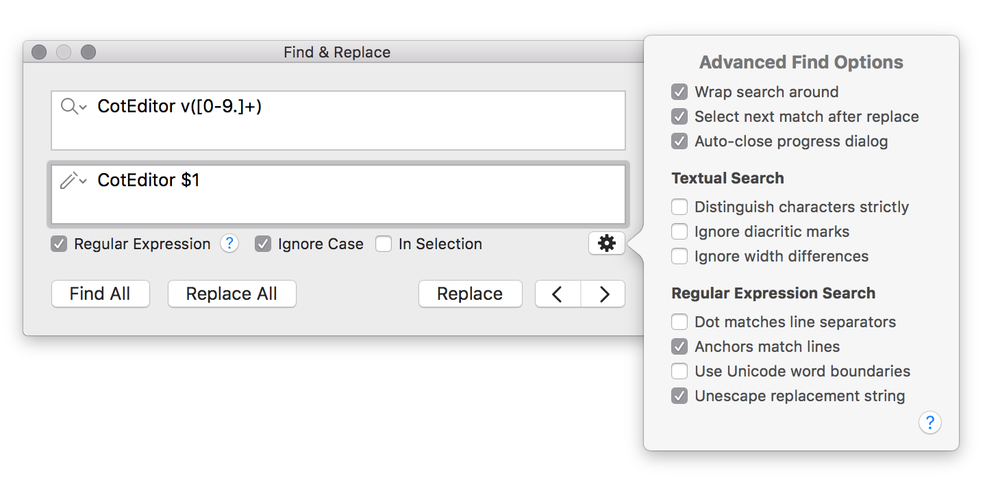

CotEditor has a powerful find and replacement feature that also can use regular expression.

Enter the text to find to the find field, the field with a lope icon; and enter the text to replace with to the replacement field, the field with a pen icon. When the replacement field is empty by replacement, the matched texts are just removed.
To insert the following special characters to the fields, use the following key combinations:
| Character | Key combination |
|---|---|
| line ending character | Option-Return |
| tab character | Option-Tab |
You can re-use previous find/replacement strings by selecting them from the lope/pen icon in the field.
| Option | Description |
|---|---|
| Regular Expression | Search with regular expression. |
| Ignore Case | Ignore character case on search. |
| In Selection | Search text only from selection. |
You can customize find behavior from the advanced find options panel. The advanced find options panel will be opened when you click the gear button in the Find window.
| Option | Description |
|---|---|
| Wrap search around | Find from the the beginning of the document if there is no match after the cursor. |
| Select next match after replace | Select next match after “Replace” automatically. |
| Auto-close progress dialog | Automatically close progress dialog that is shown when Find All or Replace All performed after progress is finished. |
Options for search when the regular expression is turned off.
| Option | Description | Default |
|---|---|---|
| Match only whole word | Restrict search results to the whole words. | Off |
| Distinguish characters strictly | Exact character-by-character equivalence. | Off |
| Ignore diacritical marks | Search ignores diacritical marks (e.g., ö = o). | Off |
| Ignore width differences | Search ignores width differences in character forms (e.g., ａ = a). | Off |
Options for search when the regular expression is enabled.
| Option | Description | Default |
|---|---|---|
| Dot matches line separators | Allow . to match any character, including newline characters (singleline). | Off |
| Anchors match lines | Allow ^ and $ to match the start and end of lines (multiline). | On |
| Use Unicode word boundaries | Use Unicode TR#29 to specify word boundaries | Off |
| Unescape replacement string | Unescape meta characters with backslash in replacement string. | On |